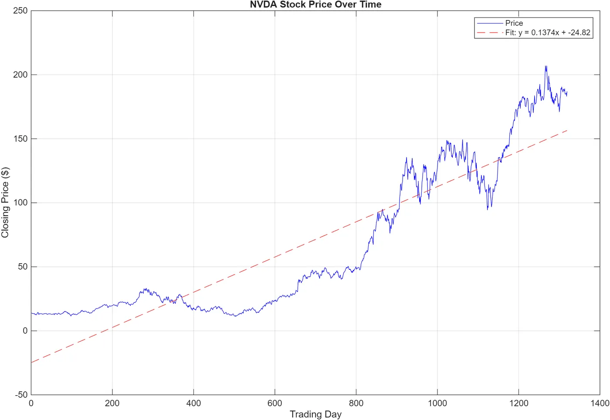
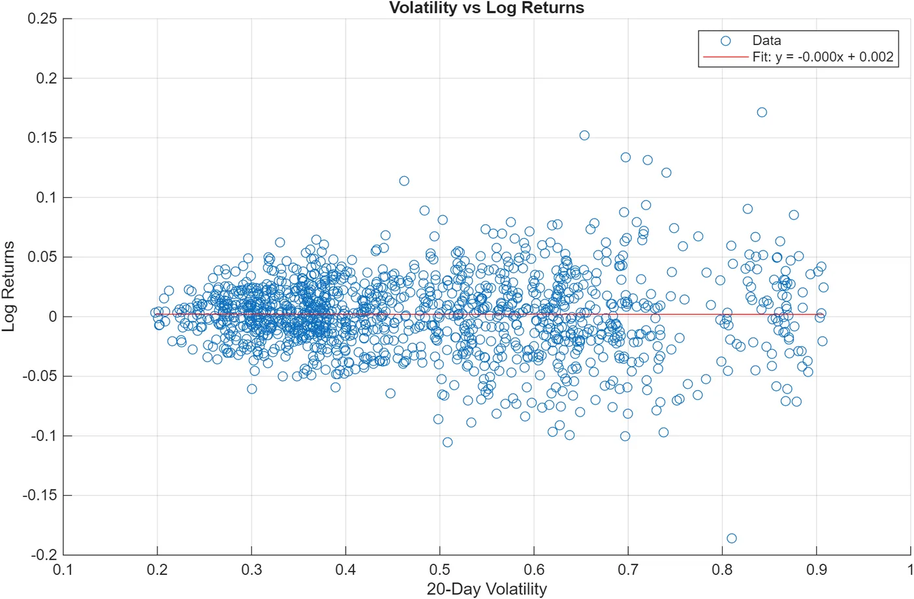
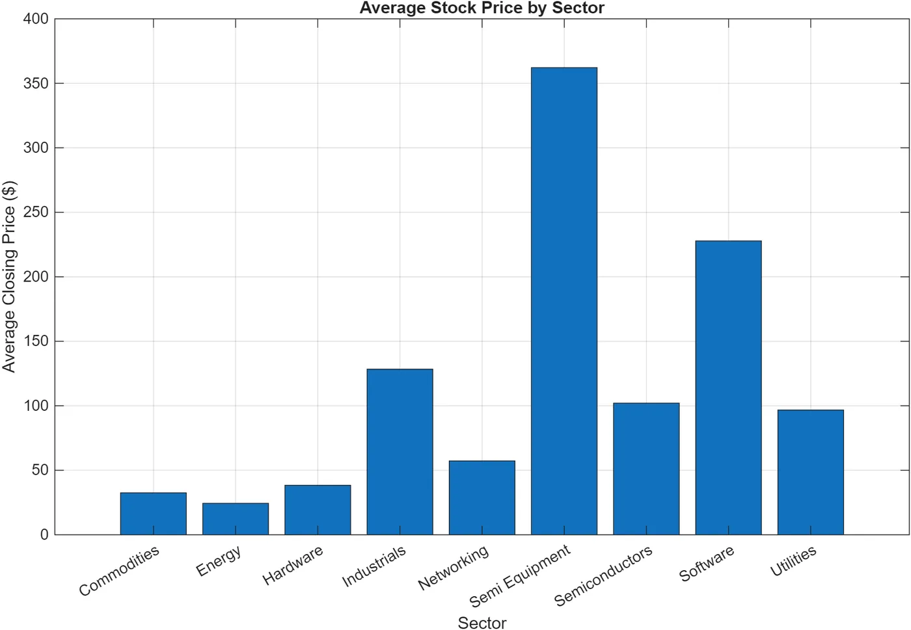

AI Compute Economics in MATLAB
I studied NVIDIA’s stock in MATLAB and used it as a stand-in for the cost and risk of the AI computing hardware that autonomous systems run on.
- Role
- Analyst
- Tool
- MATLAB
- Data
- NVIDIA prices, sector averages
- Used for
- Cost and schedule risk in my NASA proposal

Summary
I analyzed NVIDIA’s closing prices, volatility, and returns in MATLAB, and compared average prices across market sectors. I used the results to argue for cost margins and schedule buffers in the early planning of my NASA power-node proposal.
Problem
I was already working with global economic data in Northeastern’s Financial Stress Lab, so I went looking for the same kind of data on the economics of AI. NVIDIA matters here because AI computing hardware decides whether autonomous functions are feasible. A modular lunar power node needs onboard computing to monitor its own health, detect faults, and run its recovery logic. When that hardware market swings, the node’s cost and risk move with it.
Design
My script calculated an average closing price of $65.89 and a variance of volatility of 0.028912. It also computed the RSI, or relative strength index, which tracks how strongly a price has been moving up or down. The RSI ranged between 8.2 and 97.0. The script then fit two trend lines. One was price against trading day (y = 0.1374x − 24.82), and the other was 20-day volatility against log returns.
I made three charts. The first shows NVIDIA’s price with its trend line, and the second plots volatility against returns. The third compares average closing price by sector, with sectors that include commodities, energy, software, and semiconductors.
Results
The trend line and volatility against returns showed no clear relationship. That supports the risk framing for building cost margins and schedule buffers into a plan early, though it isn’t a full cost model. The sector chart showed where AI-related stocks sat compared with other sectors.
What I’d change
Stock prices only stand in indirectly for what components really cost and whether you can get them. So this work helps with the risk side of a cost model, but it isn’t a complete cost model. Next I’d add actual component prices and lead times.
Gallery


=== CALCULATED VALUES === 1. Average closing price: $65.89 2. Variance of volatility: 0.028912 3. Min RSI: 8.2, Max RSI: 97.0 === FIT EQUATIONS === Price trend: y = 0.1374x + -24.82 Volatility vs Returns: y = -0.000x + 0.002